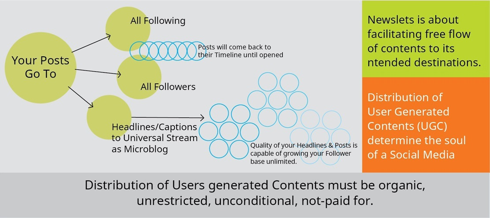
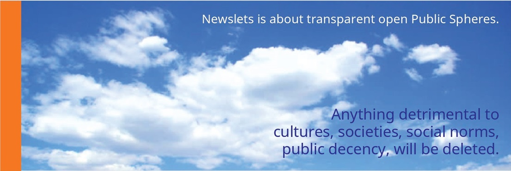

Newslets is about "follow objectively". Newslets holds this premise as Principle which cannot be traded at any point. Newslets is about who you want to connect to, why you do so, what happens after you con-nect, network, stack, bond. To answer the problem of "who you connect to" Newslets segmented users in to five defined Categories so that any user can build a selective Following in harmony with own objectives, available time, resources, life and lifestyle. It is a life issue....
Newslets do not encourage indiscriminate following, that's why imposed a Following Quota on each type of user category. No one is able to give meaningful amount of time in building and maintaining a workable, sustainable relationship unless prepared for it objectively. Follow objectively...
Newslets is about developing a user in to a responsible "Social Being." at personal, organizational, institutional, professional, enterprise, or governance capacities.
Newslets is about Freedom of Speech in its entirety. That's why Newslets opted for unrestricted distribution of users' contents at 100% fulfillment. Users are supposed to have Following and Followers as a basis of forming connections, so their contents must flow organically to both groups simultaneously. Newslets ensures that contents reaches again and again until opened. Because communication happens only when it is read and heard. Unhindered flow of communication is a precondition for Freedom of Speech.
Newslets is about truthfulness
in contract between Users and the Platform.
That's why Newslets is designed not to
monetize restricting users' contents.
When a user is requested to open a account to create contents, asking for premium, or promoted, or paid as Advertisement, is nothing but unethical. That's why Newslets is not an usual Social Media, rather it is a specialized medium of communication for personal, social, political, economic, cultural, collective purposes.
Newslets is about localness, local nature of relationships between all categories of Users. Physically local, psychologically local, and reference-level local. Newslets is about personal, social, economic, governance, service delivery and Development through effective communication. Newslets strives for making your communication as effective as possible.